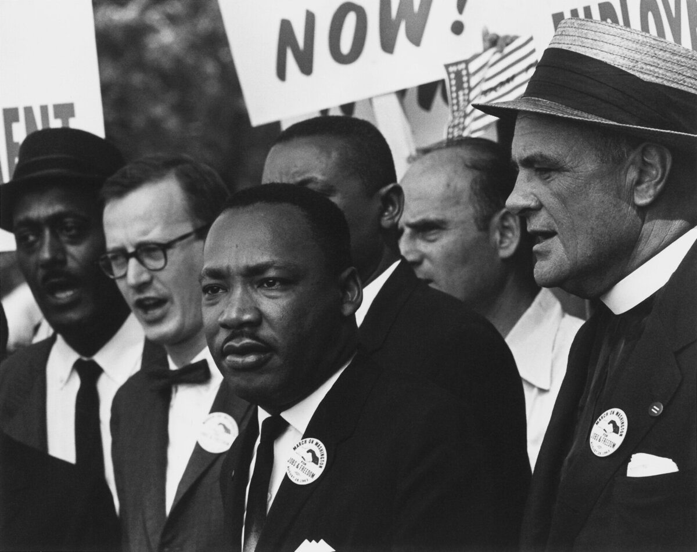
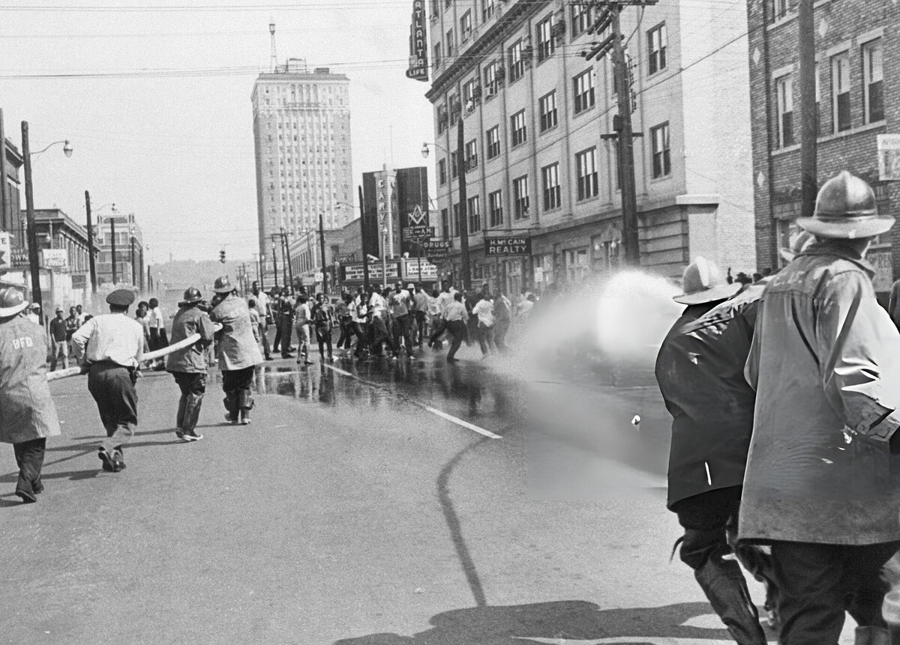

C1 · American History
The Text
Play the audio and follow along, then read it again on your own. Hover over a highlighted word to see what it means.
Listen & Read
Martin Luther King Jr.
By 1966 most Americans disapproved of him. The quotations on the walls come from the years before that.
Martin Luther King Jr. is quoted more often than he is read, and the quotations come overwhelmingly from a four-year window between 1960 and 1964. The man who spent the last three years of his life being told by former allies that he had gone too far is a different and more demanding figure.

He was twenty-six when the Montgomery bus boycott made him a national name, and he had not sought the role. What he brought to it was not a talent for protest — protest is easy — but an argument about method, developed from Gandhi and from the Black church, that nonviolent direct action could create a crisis a government would have to resolve.
The method was often misunderstood as patience. It was closer to the opposite. The theory was that segregation survived because it was comfortable for the people who benefited from it and invisible to everyone else, and that a disciplined campaign could remove the comfort — filling the jails, interrupting commerce, forcing officials to choose publicly between enforcing an unjust law and abandoning it.
Birmingham in 1963 is the clearest demonstration. The city's police commissioner was known to be violent, which was part of the calculation. When the campaign ran short of adults willing to be arrested, organisers accepted schoolchildren as marchers — a decision that was criticised at the time and is still argued about. Images of police dogs and fire hoses turned on children were broadcast nationally, business in the city stopped, and a settlement followed within weeks. The same year produced the March on Washington and the speech that supplies most of the quotations.

Selma in 1965 worked on the same logic and produced the Voting Rights Act, which did more to change American political life than anything else in the period. Between 1964 and 1968, Black registration in Mississippi rose from about seven per cent to nearly sixty.
What is usually left out is what King did next, and how badly it went. From 1965 he turned to the economics of racial inequality in northern cities — housing, employment, wages — and found that the targets were no longer a sheriff with a dog but banks, landlords, unions and city administrations in places that had thought of themselves as sympathetic. A campaign in Chicago in 1966 achieved an agreement that was largely ignored afterwards. Marching through white neighbourhoods there, he said he had never seen crowds as hostile as the ones he met in the north.
Then, on 4 April 1967, exactly a year before his death, he gave a speech at Riverside Church in New York condemning the war in Vietnam, in which he described his own government as the greatest purveyor of violence in the world. The reaction was severe. Newspapers that had supported him attacked the speech, several civil rights organisations distanced themselves, and the Johnson administration, which had passed the two great civil rights acts, broke with him entirely.
Polling from the period is worth remembering: by 1966, about two-thirds of Americans held a negative view of him. He was not a consensus figure in his lifetime, and the campaign he was organising when he died — the Poor People's Campaign, which proposed an economic bill of rights and a mass encampment in Washington — was explicitly about redistribution rather than desegregation.
He was killed in Memphis on 4 April 1968, where he had gone to support a strike by sanitation workers over pay and conditions. He was thirty-nine, and he had been the subject of years of FBI surveillance, including an anonymous letter from the Bureau that appeared to urge him to kill himself.
The posthumous reconstruction was rapid. A national holiday was established in 1983 and first observed in 1986. The version of King that became official is the one from the earlier years: inclusive, optimistic, formally about law rather than money. It is accurate as far as it goes, and it stops at 1964 — which is a choice about what a country finds comfortable to remember, not a fact about the man.
Vocabulary
- nonviolent direct action — deliberate, peaceful activity designed to disrupt an unjust system
- disciplined — controlled and organised, following rules strictly
- commerce — business and trade
- a settlement — an agreement that ends a dispute
- registration — here: the process of being officially recorded as a voter
- inequality — an unfair difference in wealth, status or opportunity
- hostile — unfriendly and aggressive
- a purveyor — a supplier of something, usually used of goods and formally
- surveillance — close watching of a person by police or intelligence services
- posthumous — happening after a person's death
Interactive Exercises
Practice
Complete each exercise, then click Submit to see your score and an explanation for every answer.
Speaking & Writing
Discussion
There are no right answers here — use these to practice speaking, or write a short answer to each.
- The Birmingham strategy depended on the authorities behaving badly in public. Is that a legitimate tactic?
- King's reputation was lowest when he was talking about poverty and war. What does that suggest about which arguments a society will accept?
- A national holiday honours a man most Americans disapproved of while he was alive. How should countries handle that kind of contradiction?